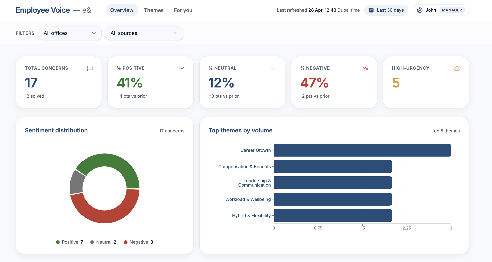
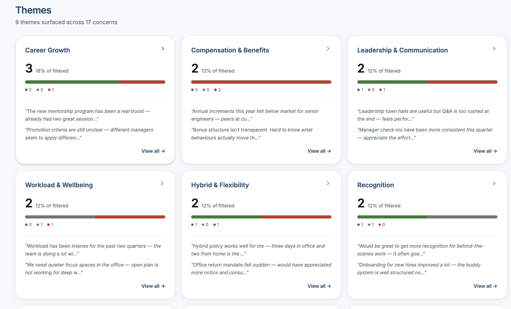
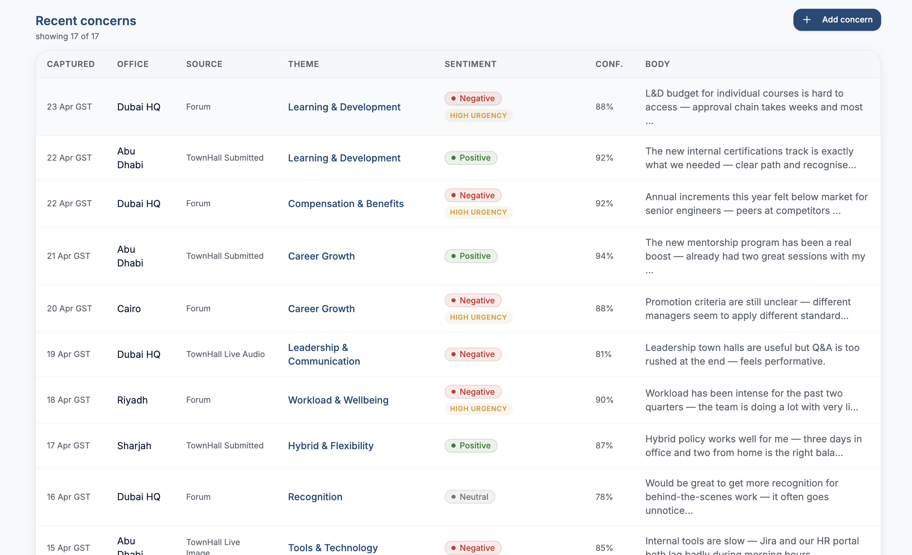
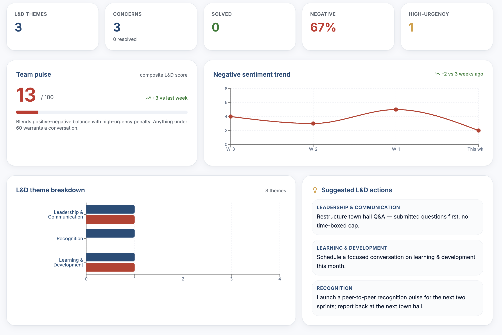
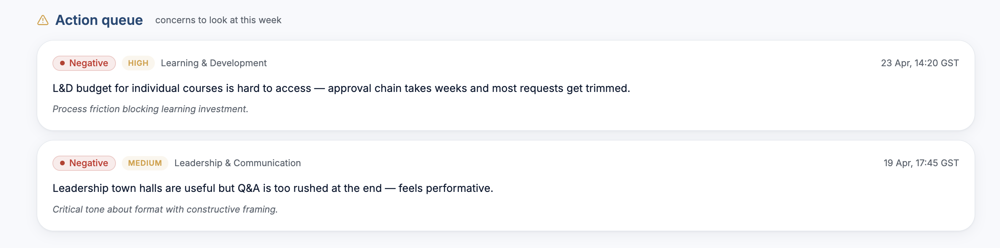

e& · People & Culture · Discovery
Employee Voice
Intelligence
Intelligence
What if every employee concern — from the People Forum, town halls, handwritten notes, and live sessions — was captured, classified, and on your dashboard before the next morning?
The CHRO view
From scattered notes to a single screen
A live dashboard showing sentiment across offices, top themes rising, and high-urgency concerns — refreshed automatically.
Sentiment Overview

KPI cards · Sentiment donut · Top themes by volume · Office & source filters
Theme Deep-Dive

Theme cards with sentiment split · Example concerns · Click to drill into detail
Recent Concerns Feed

Every concern listed · Sentiment pills · Source, office, confidence · Full-text search
Personalised "For You" View

Scoped to your role · Your offices, your themes, your urgency queue
Manual Concern Entry

Quick-add for ad hoc concerns · Office, source, theme, sentiment · In production, captured automatically
Action Queue & Tracking

High-urgency concerns assigned to HR owners · Status tracking (Open → In Progress → Resolved) · CHRO progress reporting